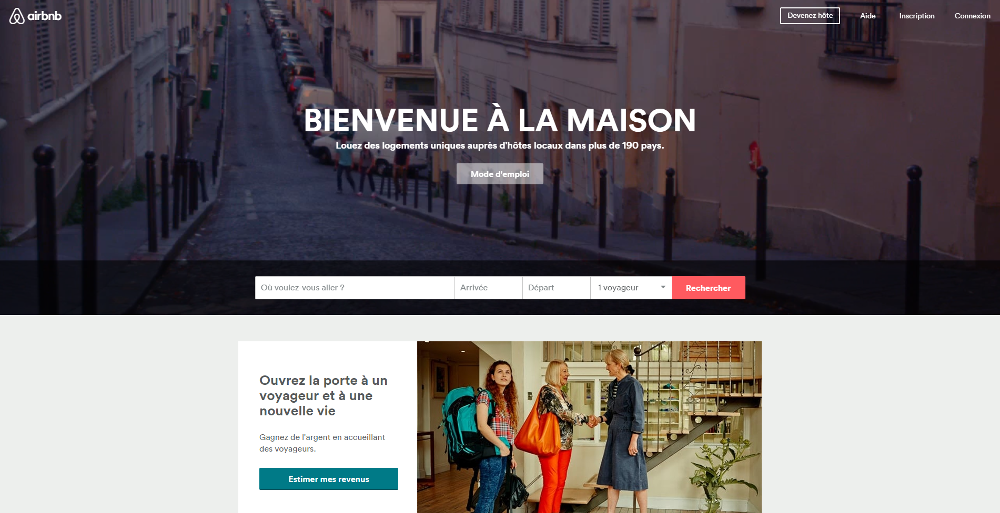
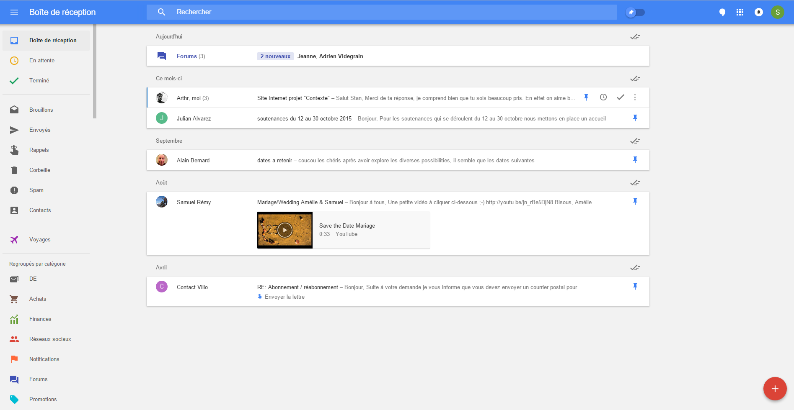
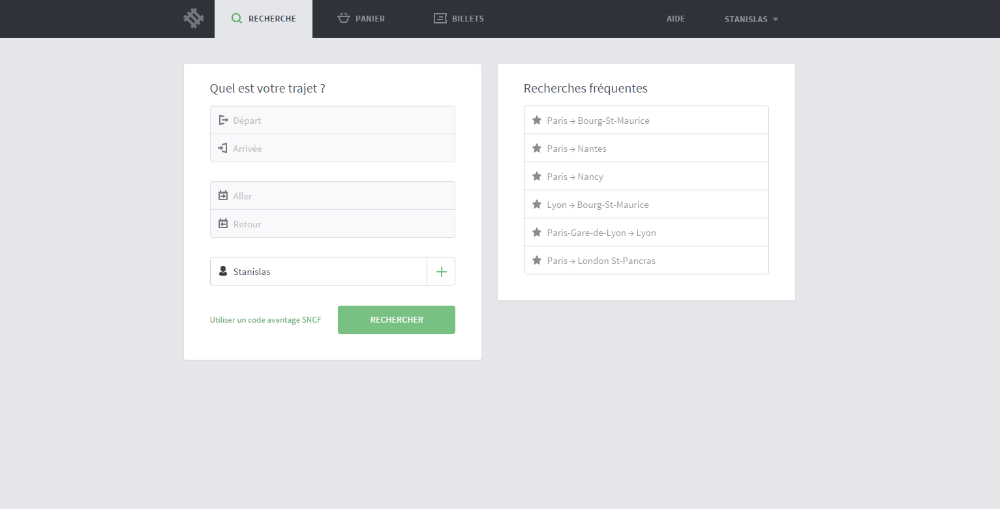
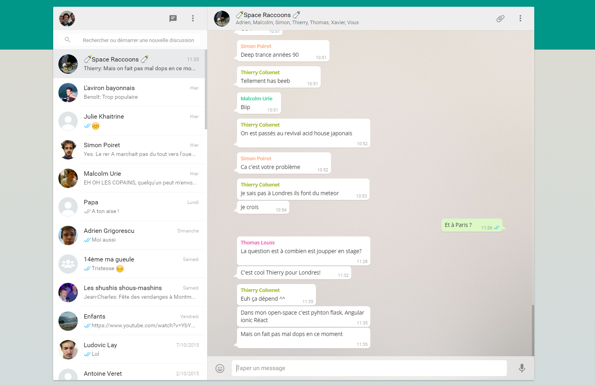
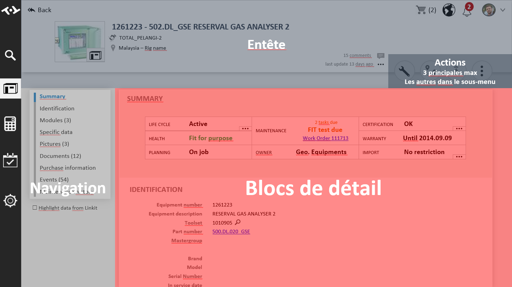
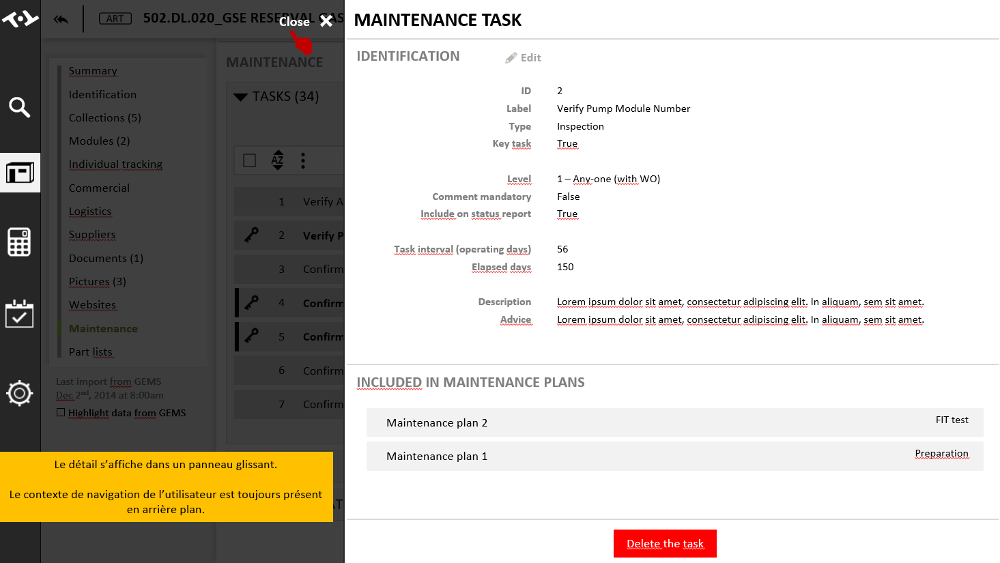
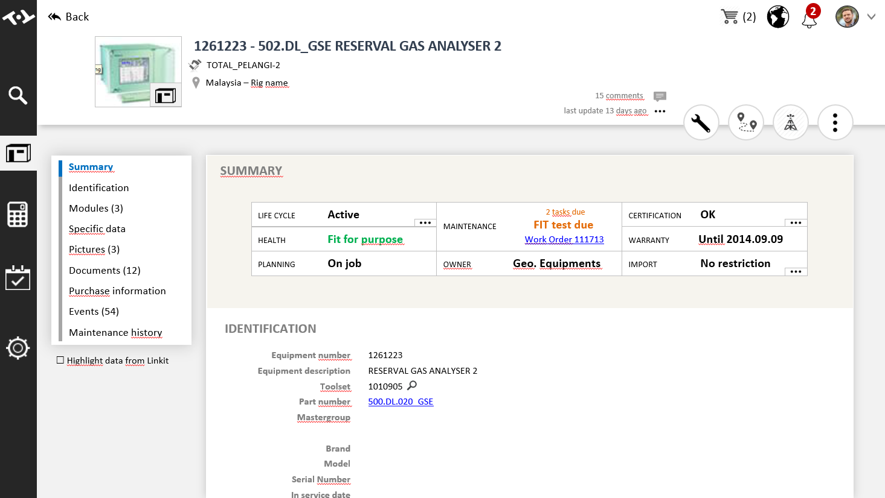
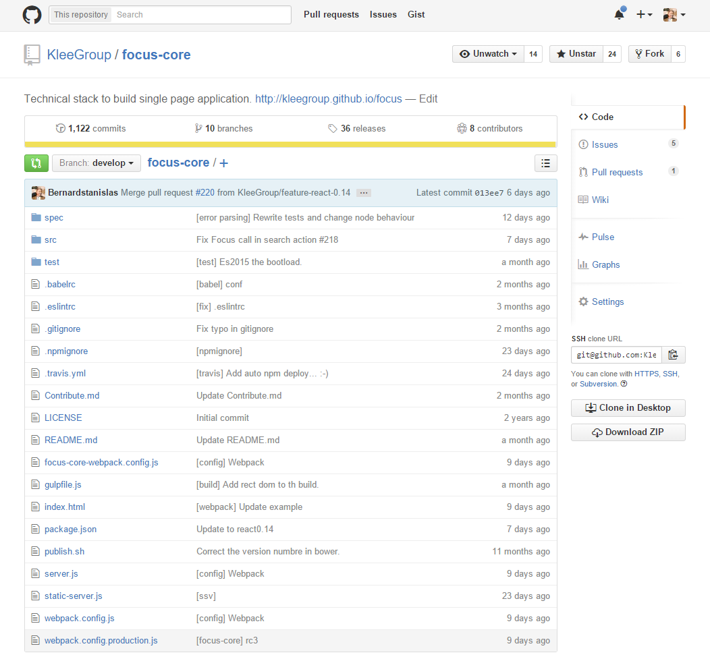
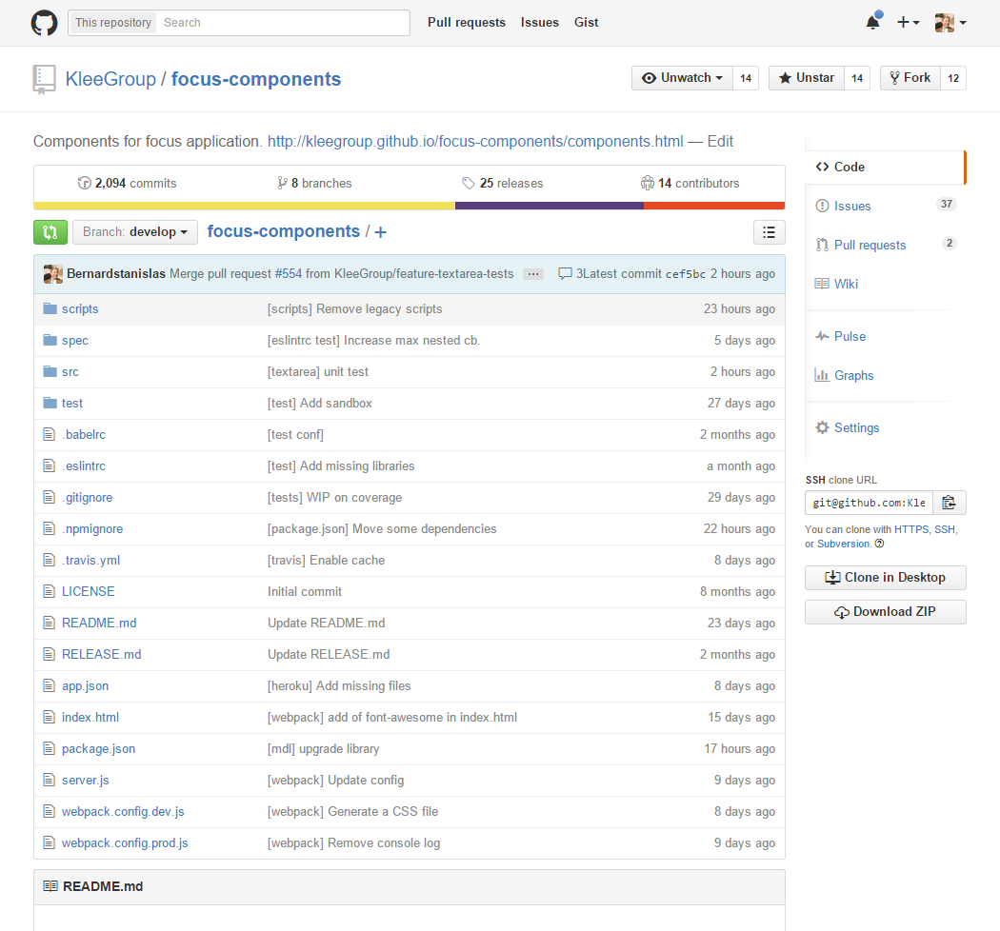

Focus
Solution de développement d'applications modernes
Stanislas BERNARD, le 15/10/2015
En résumé
Focus est une solution interne à Klee de production d'applications web modernes, dans la lignée des géants du Web.
Découpée sous forme de plusieurs outils, cette solution accompagne les projets de Klee depuis la conception jusqu'à la livraison au client.
Le contexte
Nouveaux usages du Web
Le Web est omniprésent dans nos vies actuelles

Airbnb

Google Inbox

Capitaine train
L'activité de l'intégration chez Klee
“L'intégration est à l'informatique ce que la haute couture est au textile.”
Production d'applications sur mesure, adaptées au métier du client, dans le contexte de son activité.
Un écart entre le privé et le professionnel

Privé

Professionnel
La réponse de Focus
Replacer l'utilisateur au centre
Avant

Après
Accompagner les projets
Une solution multi niveaux
- Un discours et une démonstration d'avant-vente
- Une méthodologie et des maquettes de conception
- Un framework Javascript et des extensions techniques
Au moyen d'une équipe pluridisciplinaire
Corinne
Florence
Nadège
Pierre

Stanislas
Thomas
De quoi est fait Focus ?
Des maquettes de conception



Un socle de développement

React

Javascript
Focus JS
Un framework Javascript
Découpé en plusieurs fonctions
- Focus Core, le coeur fonctionnel
- Focus Components, une étagère de composants graphiques
- Extensions Focus, des fonctionnalités additionnelles
En open-source

Focus Core

Focus Components
Une aide à l'avant-vente
Application de démonstration
Présentation de la démo, en GIF
La developper experience
Showcase des composants
Présentation du showcase
Outils de développement
Présentation de ESLint, Webpack
Documentation fonctionnelle
Présentation de Focus doc, sous forme d'un GIF
Documentation technique
Présentation de la doc, en local